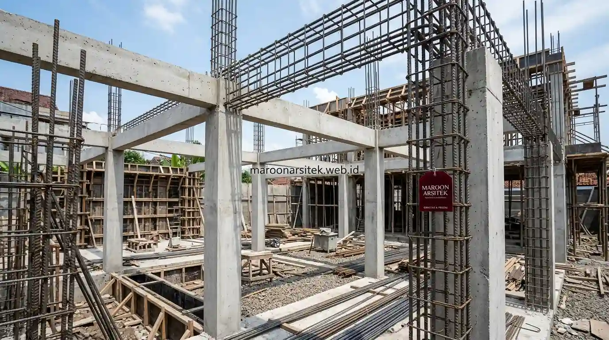

Kontraktor rumah yang menangani pembangunan dari nol perlu memiliki standar struktural yang jelas, mencakup metode kerja pondasi, kolom, dan balok yang sesuai kondisi tanah dan beban bangunan, agar hasil konstruksi benar-benar kokoh dan tahan lama. Maroon Arsitek menerapkan standar struktural yang konsisten pada setiap proyek jasa kontraktor rumah Jakarta.
Kebutuhan pelaksana konstruksi yang andal menjadi krusial ketika membangun dari lahan kosong, karena setiap keputusan teknis pada tahap awal akan memengaruhi kekuatan dan keawetan bangunan dalam jangka panjang. Bagian berikut menguraikan standar struktural yang diterapkan beserta proses kerja yang menjamin hasil konstruksi yang kokoh.
Standar Struktural pada Tahap Pondasi Sesuai Kondisi Tanah
Standar struktural pada tahap pondasi ditentukan berdasarkan hasil penyelidikan kondisi tanah, memastikan jenis dan kedalaman pondasi yang dipilih sesuai dengan daya dukung tanah di lokasi proyek, bukan menggunakan spesifikasi generik tanpa penyesuaian. Tahap ini menjadi fondasi utama kekuatan keseluruhan bangunan.
Penyelidikan tanah dilakukan sebelum desain struktur difinalisasi, memberikan data akurat mengenai karakteristik lapisan tanah yang menjadi dasar perhitungan jenis pondasi yang paling sesuai untuk kondisi lahan tersebut.
Penerapan standar ini mencegah risiko penurunan bangunan yang tidak merata di kemudian hari, yang dapat menyebabkan keretakan struktural apabila jenis pondasi yang digunakan tidak sesuai dengan kondisi tanah sebenarnya.
Penyesuaian Jenis Pondasi dengan Hasil Penyelidikan Tanah
Kebutuhan struktur pondasi yang sesuai kondisi lahan dijawab melalui penyesuaian jenis pondasi berdasarkan hasil penyelidikan tanah, baik menggunakan pondasi dangkal maupun pondasi dalam, tergantung karakteristik lapisan tanah yang ditemukan.
Penyesuaian ini memastikan efisiensi biaya sekaligus keamanan struktur, karena penggunaan jenis pondasi yang berlebihan dari kebutuhan aktual hanya akan menambah biaya tanpa manfaat struktural yang signifikan.
Kontrol Kualitas Material Struktur Sebelum Digunakan
Kontrol kualitas material struktur, seperti besi tulangan dan campuran beton, dilakukan sebelum material digunakan dalam proses konstruksi, memastikan spesifikasi yang tercantum dalam gambar kerja benar-benar terpenuhi pada material yang terpasang di lapangan. Kontrol ini menjadi bagian penting dari standar struktural yang diterapkan secara konsisten.
Pemeriksaan material mencakup verifikasi sertifikat mutu dari pemasok, serta pengujian sampel pada komponen tertentu untuk memastikan kesesuaian dengan spesifikasi teknis yang telah ditentukan dalam perencanaan struktur bangunan.

Material yang tidak memenuhi standar segera ditolak dan diganti sebelum digunakan dalam konstruksi, mencegah risiko penggunaan material substandar yang dapat memengaruhi kekuatan struktur bangunan secara keseluruhan.
Verifikasi Sertifikat Mutu dari Pemasok Material
Kebutuhan kepastian kualitas material dijawab melalui verifikasi sertifikat mutu dari pemasok sebelum material diterima di lokasi proyek, memastikan spesifikasi teknis yang tercantum sesuai dengan kebutuhan struktur yang telah direncanakan.
Verifikasi ini menjadi langkah pencegahan penting, mengingat kualitas material struktur yang tidak sesuai standar dapat berdampak jangka panjang terhadap keamanan dan keawetan bangunan yang sedang dibangun.
Pengawasan Berkelanjutan Sepanjang Tahap Konstruksi
Pengawasan berkelanjutan dilakukan sepanjang tahap konstruksi, mulai dari struktur hingga finishing, memastikan setiap pekerjaan sesuai gambar kerja dan standar kualitas yang telah ditetapkan sebelum proyek dinyatakan selesai. Pengawasan ini menjadi jaminan bahwa standar struktural yang direncanakan benar-benar terealisasi di lapangan.
Setiap tahap pekerjaan diverifikasi oleh tim pengawas sebelum dilanjutkan ke tahap berikutnya, mencegah kesalahan yang terakumulasi apabila ketidaksesuaian pada satu tahap tidak segera terdeteksi dan dikoreksi bersama tim jasa kontraktor rumah kami.
Klien menerima laporan progres secara berkala, memberikan transparansi penuh atas perkembangan konstruksi tanpa harus memantau lokasi proyek setiap hari secara langsung.
Verifikasi Kesesuaian Tiap Tahap Sebelum Melanjutkan Pekerjaan
Kebutuhan kepastian kualitas bertahap dijawab melalui verifikasi menyeluruh pada setiap tahap pekerjaan sebelum melanjutkan ke tahap berikutnya, mencegah akumulasi kesalahan yang sulit diperbaiki setelah konstruksi berjalan lebih jauh.
Verifikasi ini menjadi kontrol kualitas berlapis yang menjaga standar struktural tetap konsisten dari awal hingga akhir proyek pembangunan rumah dari nol.